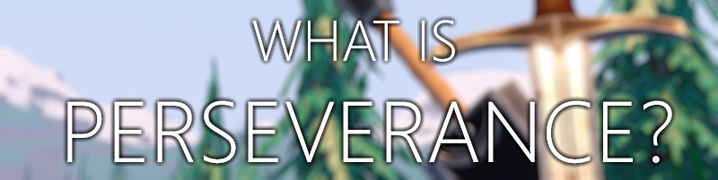

Perseverance is a free-to-play Isekai MMORPG developed by two people. With a strong emphasis on player freedom and customization.
Perseverance is, at it's core, an adventure. Whether you are fighting creatures of the night in a dim forest or finding the tavern of a bustling town, you create your own story.

Isekai means "another world" in Japanese. Perseverance's core gameplay loop is that each death sends you backwards in time as if your death never happened, and all progress gained will be lost. For each new character you create, you will inherit a portion of your previous character's traits.